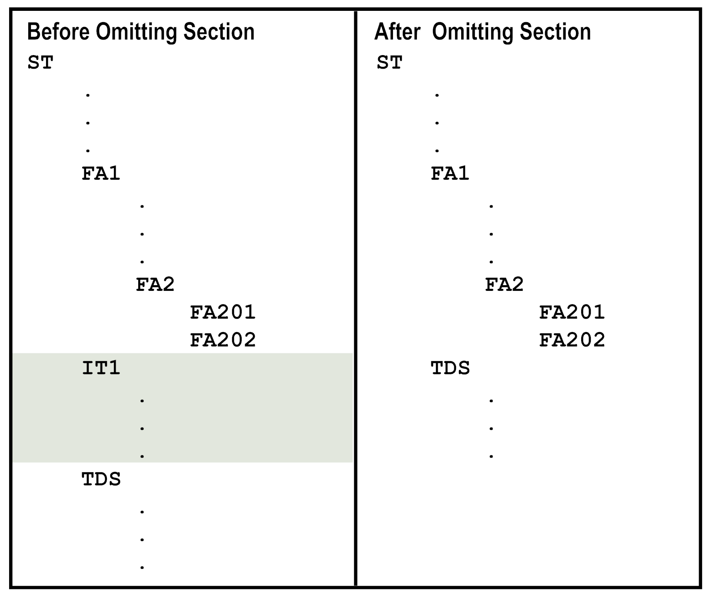
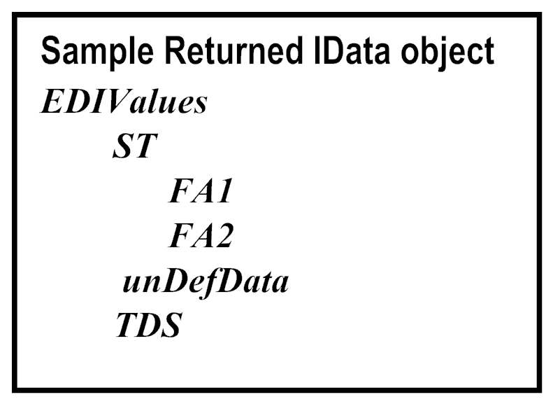

Step | Description |
1 | If you created the EDI flat file schema from a SEF file, add the elements for the interchange envelopes and group envelopes into the flat file structure. SEF files do not describe these elements. Your service will execute the wm.b2b.edi:convertToValues service against the entire EDI document rather than just a transaction set or file. As a result, the flat file schema needs to reflect the envelope structure. |
2 | Update the flat file structure to reflect how you want the convertToValues service to return segments. When you execute the convertToValues service with the iterator input parameter set to true, the convertToValues service uses the flat file structure to determine the number of segments to process into an IData object. It starts processing at a top-level element and processes all of its children into an IData object in one invocation. For example, if you want the first invocation to return only the ISA header information, update the structure as follows: ISA ISA01 ISA02 ISA03 ISA04 ISA05 ISA06 ISA07 ISA08 ISA09 ISA10 ISA11 ISA12 ISA13 ISA14 ISA15 ISA15 GS . . . Because GS is not a child under ISA, the convertToValues service would return only the ISA entry as an IData object. A subsequent call would act on the GS entry. |
3 | Identify the repeating sections of the EDI document that you want to loop over to process and remove these sections from the flat file schema structure. For example, in an ANSI X12 810 document, you might want to loop over the IT1 (line item) segments because you want the line items included in the invoice.  |
4 | During execution of the convertToValues service with the updated flat file schema, when the service encounters sections of the document that are not defined in the flat file schema structure, it places those sections as unparsed in the returned IData object. The unparsed sections will be in either an element named unDefData, or in an element named _RID_ if the document is considered large. For more information about large documents, see
Handling Large Documents When Using
Trading Networks .  |
5 | Create new flat file schemas for the sections that you removed from the EDI flat file schema. In your service, you will perform a second pass of the convertToValues service for the unparsed sections of the document. When you invoke the convertToValues service for the second pass, the input flat file schema is this new flat file schema that you are creating that defines the structure of the data left unparsed, that is, a repeating section of the document that you want to process iteratively. |